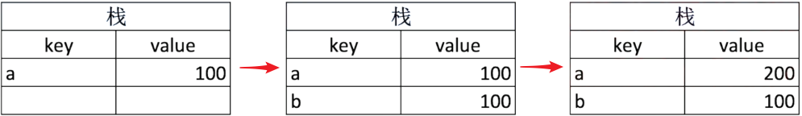
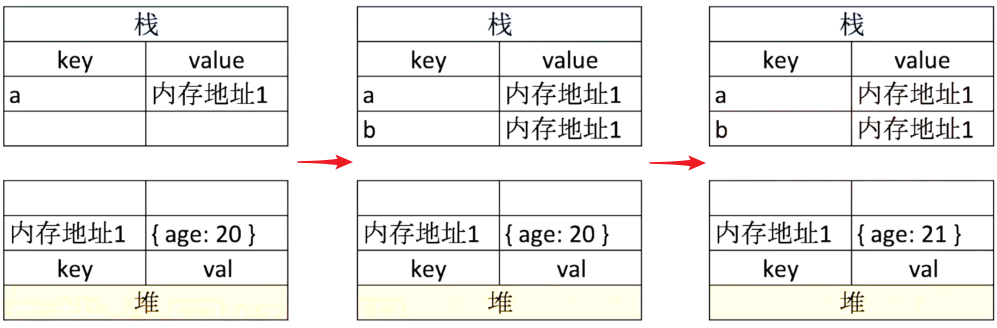

变量是每个语言最开始的基础，不会变量，别说会 JS
变量类型和计算
值类型与引用类型的区别
先看两段代码
1 | // 值类型 |
1 | // 引用类型 |
深入分析
通过第一个值类型来看，首先变量一般会在函数中或者全局中出现，无论是函数还是全局中，值类型都是通过在栈（计算机的内存结构）中存储的，示意图如下

通过第二个引用类型来看，在计算机变量存储的时候，栈和堆是同时存在的，栈是从上到下一层层累加，而堆是从下往上一层层落，因此在 age = 20 的这个对象在堆中申请一个内存地址，然后把 age = 20 放在堆里面，然后 key 中存储对应的内存地址，而这个时候栈中存储的 a 的 value 指向的是内存地址 1，也就是说并不是直接存储的对象，而是存储的这个内存地址指向这个对象，示意图如下

常见的值类型与引用类型
1 | // 常见值类型 |
1 | // 例题 |
注：至于值类型与引用类型是不同的赋值形式，原因是考虑到性能或者存储的问题，值类型占用的空间较少（因为只有一个值），所以直接放在栈里面同时复制的时候也不会对性能造成很大的影响；而引用类型中的 Json 对象可能非常大，第一：直接放到栈的值里面会导致存储地址非常大，不好管理。第二：如果复制的时候直接复制value会导致复制过程非常的慢。因此计算机所有的程序，所有的代码，所有的语言都是采用值类型与引用类型严格的分离出来，它们的存储机制、赋值机制、拷贝机制也是严格的区分出来，它是基于内存的空间与 CPU 计算的耗时做到这样的区分。让引用类型也类似于值类型赋值方式，就需要深拷贝。
typeof 运算符
- 识别所有值类型
- 识别函数
- 判断是否是引用类型（不可再细分）
1 | // 判断所有值类型 |
深拷贝
浅拷贝
1 | // 浅拷贝，浅拷贝只是拷贝了引用对象存储栈中的 value（内存地址），所以任意的修改会造成堆中值的修改 |
深拷贝
1 | // 若只想修改 obj2 而不干扰到 obj1，所以就需要深拷贝 |
变量计算-类型转换
最容易考察也是最容易疏忽的地方
- 字符串拼接
- == （等号运算符）
- if语句和逻辑运算
字符串拼接
1 | const a = 100 + 10 // 110 |
== 运算符
1 | // 会发生隐式的转换，让他们尝试相等 |
if语句和逻辑运算
truly变量：!!a === true 的变量
1
2
3const n = 100
console.log(!n); // false
console.log(!!n) // truefalsely变量：!!a === false 的变量
1
2
3
4
5
6
7
8const n = 0
console.log(!n); // true
console.log(!!n) // false
console.log(!!null) // false
console.log(!!'') // false
console.log(!!undefined) // false
console.log(!!{}) // true1
2
3
4
5
6
7// 以下是 falsely 变量。除此之外都是 truly 变量
!!0 === false
!!NaN === false
!!'' === false
!!null === false
!!undefined === false
!!false === false
实际上 if 语句里面判断的不是 true 或者 false ，判断的是 truly 或者 falsely 变量
例如：
1 | // truly 变量 |
逻辑判断
1 | console.log(10 && 0) // 0 && 第一个值为 true 则返回第二个，第一个值为 false 则返回第一个 |